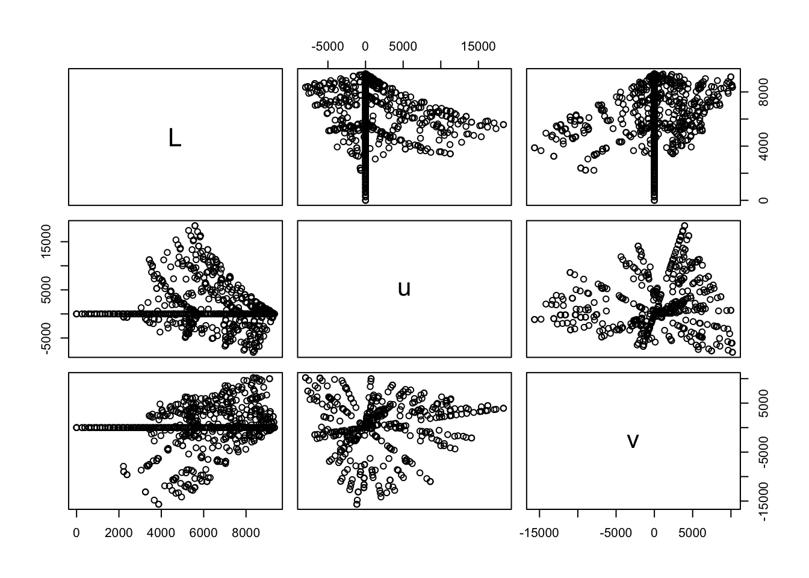

8.2 What is network data?
Networks data consists of entities (nodes or vertices) and their relation (edges or links).
Edges can be: directed or undirected
8.2.1 A tidy network manipulation API
The first package is tidygraph() a dplyr API for network data.
New functions:
activate()informs tidygraph on which part of the network you want to work on, either nodes or edges..N()which gives access to the node data of the current graph even when working with the edges -.E()and.G()to access the edges or the whole graph)
In this example we create a graph, assign a random label to the nodes, and sort the edges based on the label of their source node.
The function play_erdos_renyi() creates graphs directly through sampling of different attributes.
library(tidygraph)
graph <- tidygraph::play_erdos_renyi(n = 10, p = 0.2) %>%
activate(nodes) %>%
mutate(class = sample(letters[1:4], n(), replace = TRUE)) %>%
activate(edges) %>%
arrange(.N()$class[from])
graph## # A tbl_graph: 10 nodes and 23 edges
## #
## # A directed simple graph with 2 components
## #
## # Edge Data: 23 × 2 (active)
## from to
## <int> <int>
## 1 8 1
## 2 9 1
## 3 3 10
## 4 3 5
## 5 3 7
## 6 9 7
## # … with 17 more rows
## #
## # Node Data: 10 × 1
## class
## <chr>
## 1 c
## 2 a
## 3 a
## # … with 7 more rows8.2.2 Conversion
Data can be converted with as_tbl_graph(), a data structure for tidy graph manipulation. It converts a data frame encoded as an edgelist, as well as converting the result of hclust()
## from to year
## 1 1 14 1957
## 2 1 15 1957
## 3 1 21 1957
## 4 1 54 1957
## 5 1 55 1957
## 6 2 21 1957With as_tbl_graph() we obtain:
## # A tbl_graph: 70 nodes and 506 edges
## #
## # An undirected multigraph with 1 component
## #
## # Node Data: 70 × 1 (active)
## name
## <chr>
## 1 1
## 2 2
## 3 3
## 4 4
## 5 5
## 6 6
## # … with 64 more rows
## #
## # Edge Data: 506 × 3
## from to year
## <int> <int> <dbl>
## 1 1 13 1957
## 2 1 14 1957
## 3 1 20 1957
## # … with 503 more rows8.2.2.1 hclust() and dist() functions:
In this example the luv_colours() function allows for all built-in colors() translated into Luv colour space, a data frame with 657 observations and 4 variables:
luv_colours
luv_colours <- as.data.frame(convertColor(t(col2rgb(colors())),
"sRGB", "Luv"))
luv_colours$col <- colors()
head(luv_colours)## L u v col
## 1 9341.570 -3.370649e-12 0.0000 white
## 2 9100.962 -4.749170e+02 -635.3502 aliceblue
## 3 8809.518 1.008865e+03 1668.0042 antiquewhite
## 4 8935.225 1.065698e+03 1674.5948 antiquewhite1
## 5 8452.499 1.014911e+03 1609.5923 antiquewhite2
## 6 7498.378 9.029892e+02 1401.7026 antiquewhite3This visualization represent the content of the dataset, then we will see how it looks in a grapg representation.
ggplot(luv_colours, aes(u, v)) +
geom_point(aes(colour = col), size = 3) +
scale_color_identity() +
coord_equal() +
theme_void()
For example, selecting the first 3 variables and plotting the data with the plot() function we can see that there are some connections within the elements of the dataset, as the colors are connected to each other.
## L u v
## 1 9341.570 -3.370649e-12 0.0000
## 2 9100.962 -4.749170e+02 -635.3502
## 3 8809.518 1.008865e+03 1668.0042
## 4 8935.225 1.065698e+03 1674.5948
## 5 8452.499 1.014911e+03 1609.5923
## 6 7498.378 9.029892e+02 1401.7026
## [1] "hclust"With the tidygraph::as_tbl_graph() function we can transorm the dataset into classes “tbl_graph”, “igraph” to make it ready to use for making a visualization of the network data.
## # A tbl_graph: 1313 nodes and 1312 edges
## #
## # A rooted tree
## #
## # Node Data: 1,313 × 4 (active)
## height leaf label members
## <dbl> <lgl> <chr> <int>
## 1 0 TRUE "101" 1
## 2 0 TRUE "427" 1
## 3 778. FALSE "" 2
## 4 0 TRUE "571" 1
## 5 0 TRUE "426" 1
## 6 0 TRUE "424" 1
## # … with 1,307 more rows
## #
## # Edge Data: 1,312 × 2
## from to
## <int> <int>
## 1 3 1
## 2 3 2
## 3 8 6
## # … with 1,309 more rows## [1] "tbl_graph" "igraph"8.2.3 Algorithms
The real benefit of networks comes from the different operations that can be performed on them using the underlying structure.
luv_graph %>%
tidygraph::activate(nodes) %>%
mutate(centrality = centrality_pagerank()) %>%
arrange(desc(centrality))## # A tbl_graph: 1313 nodes and 1312 edges
## #
## # A rooted tree
## #
## # Node Data: 1,313 × 5 (active)
## height leaf label members centrality
## <dbl> <lgl> <chr> <int> <dbl>
## 1 0 TRUE 207 1 0.000763
## 2 0 TRUE 315 1 0.000763
## 3 0 TRUE 208 1 0.000763
## 4 0 TRUE 316 1 0.000763
## 5 0 TRUE 205 1 0.000763
## 6 0 TRUE 313 1 0.000763
## # … with 1,307 more rows
## #
## # Edge Data: 1,312 × 2
## from to
## <int> <int>
## 1 1187 1079
## 2 1187 1080
## 3 942 797
## # … with 1,309 more rows